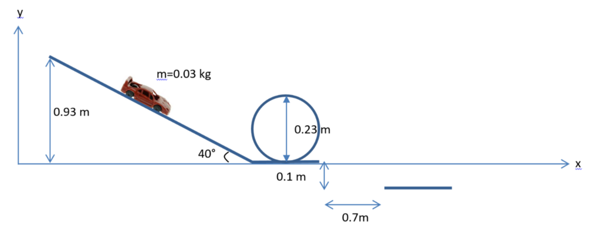

CONTEXT
Toretto was challenged by Owen Shaw to win a car race. He then tasked Tej Parker (us) with modifying his car to meet the challenge.
PROJECT IMPLEMENTATION
In this project we have to improve Toretto's car. To improve it we must carry out several calculations so that the car is an optimal speed. We had to perform these different calculations :
- Calculate the speed of the car at the end of the slope.
- Calculate the minimum speed of the car at the entrance to the loop.
- Calculate the speed needed to pass the ravine and the loop.

We made a video. Thanks to this video we will analyze the speed of the car according to x and y to know if in real life the car can pass the ravine. We will confirm this hypothesis using the Tracker software.


ACQUIRED SKILLS
During this project, we learned how to use Tracker software, use of mechanical formula (the theorem of kinetic energy, We will use the theorem of mechanical energy, We will use the theorem of potential energy of gravity, We will use Coulomb's law)..
OPINION ON THE PROJECT
I think this project was very rewarding. I liked to calculated the different speeds of the car.